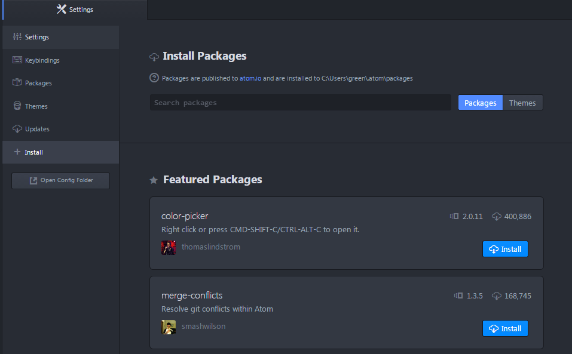
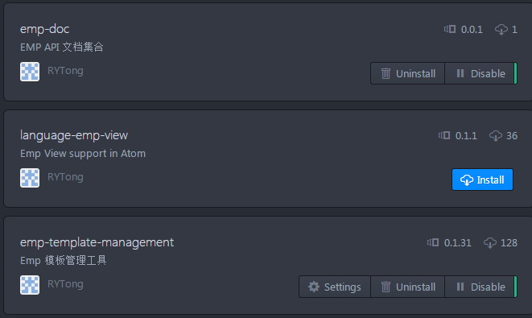

开发工具
1 atom下载与安装
1.进入atom官方网站https://atom.io/，选择Windows版本下载。
2.下载完成后，双击AtomSetup.exe进行安装，点击后atom会自动安装，等待安装完成即可。
2 Emp插件安装
1.打开atom，点击File菜单中的Settings选项。弹出Settings部分。

2.在搜索框输入emp,点击Packages按钮，在搜索结果中，选择RYTong开发的包，全部安装。

注 上图中，第一个包已安装，未安装的包如第二个所示，点击Install进行安装。
3.安装完成后。菜单栏多出一个Emp菜单项。
3 无网络环境安装
在没有网络环境的情况下，请找相关负责人将 atom.zip 和 package.zip 拷入本机。
解压 atom.zip，找到atom.exe直接运行即可，解压package.zip,然后将package里的插件包全部拷入 C:\Users\***\.atom\packages下，
点击atom中View->Reload,即可看到上图中Emp菜单项。
4 常见问题
1.问题:安装插件时，点击Install之后，长时间无反应。
解决方案:等待片刻，然后重启atom查看已安装的包。